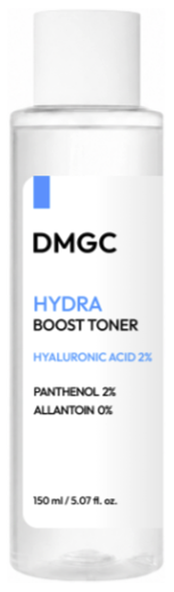

DMGC Hydra SKU 01 · 토너
가볍게 흡수되는 워터 타입 부스팅 토너
히알루론산 2%가 각질층에 즉각적인 수분감을 채우고, 판테놀과 알란토인이 자극받은 피부를 편안하게 정돈해 다음 단계 흡수를 돕습니다. 끈적임 없이 데일리로 여러 겹 레이어링하기 좋은 제형입니다.
히알루론산 2% + 판테놀 2% + 알란토인에 담긴 주요 성분
히알루론산 2%
즉각 수분 공급
각질층에 즉각적인 수분감을 채워줍니다.
판테놀 2%
진정 & 정돈
자극받은 피부를 편안하게 정돈해 다음 단계 흡수를 돕습니다.
알란토인
저자극 진정
끈적임 없이 데일리 레이어링에 적합한 저자극 진정 성분입니다.
150ml